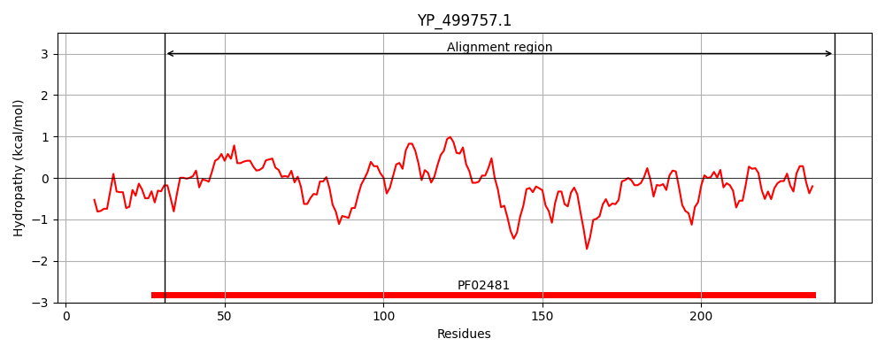
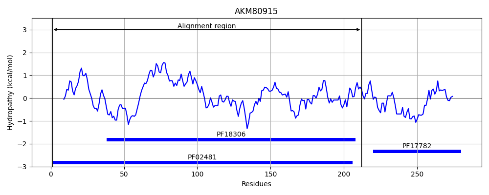
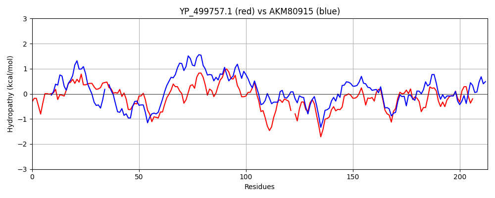

Hit Accession: AKM80915
Hit TCID: 3.A.11.1.5
Hit Description: gnl|BL_ORD_ID|1292 gnl|TC-DB|AKM80915.1|3.A.11.1.5 hypothetical protein UW38_C0001G1085 [Candidatus Saccharibacteria bacterium GW2011_GWC2_44_17]
Mach Len: 213
e:0.000000
Query TMS Count : 0
Hit TMS Count: 0
TMS-Overlap Score: 0.000000
Predicted Substrates:None
BLAST Alignment:
Score: 284 , Bit scores: 114 bits, E-value: 1.9e-30, Alignment length: 213, Percentage identity: 34
Query: 31 LKVSYITYMDSEYPVLLKEIYQFPLLLFYKGNIKLINNMHHLAVVGARDSTSYTQQSLEFLLSNDKSKYLTIVSGLAQGADAMAHQIALKYNLPTIAVLAFGHQTHYPKSTLALRNKIEEKG-LVISEYPPHTPIAKYRFPERNRIISGLSKGVLITEAKEQSGSHITIDFALEQNRNVYVLPGSMFNPMTKGNLLRIQEGAKVVLNANDIFE 242
+K++ ++ + + ++ I P L++ GN+ +A+VG R ++Y ++ + + + IVSGLA G DA+AH+ AL TIAVLA G P + + I KG +I+EYPP T + F RNRI+SGLS +ITEA +SG+ T LEQ R + V+PG++ +P++ G +++GA + +A DI E
Sbjct: 1 MKINSLSPQSNNFLQIITTIALVPKKLYFIGNLPT-ERRPTVAIVGTRKPSTYGKEVTYKIAYELAKRGVVIVSGLALGVDAIAHRAALDAGGTTIAVLANGLPAIQPATNRQIGEDIVAKGGAIITEYPPDTDARVHHFLARNRIVSGLSDATIITEAAAKSGTLNTAGHTLEQGRELCVVPGNITSPLSAGCNHLLKQGAHPITSAQDILE 212 | Protein Hydropathy Plots: |
|---|
|  |  |
Pairwise Alignment-Hydropathy Plot:
|
|---|
|  |